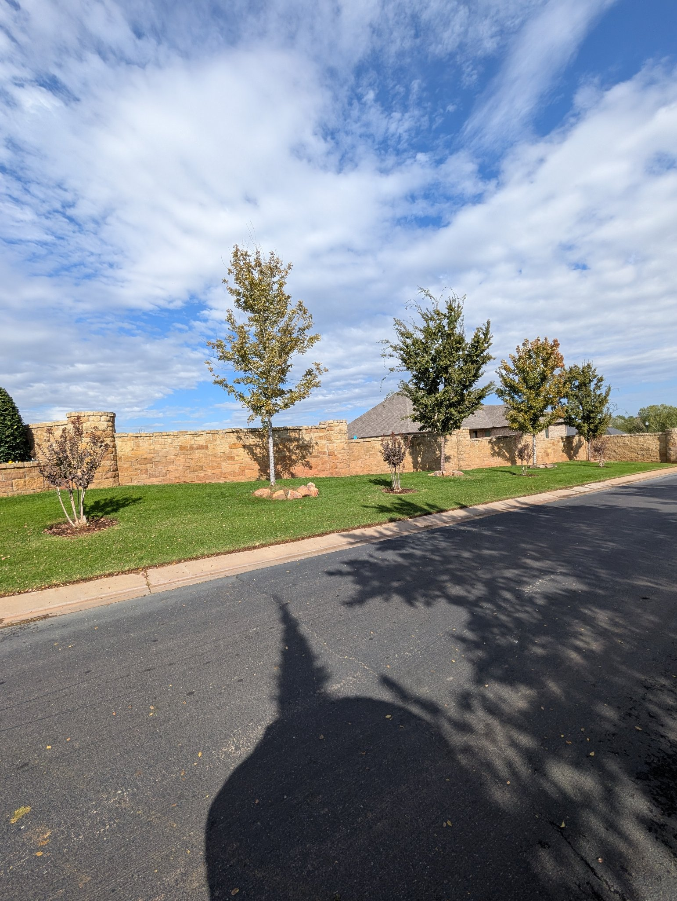
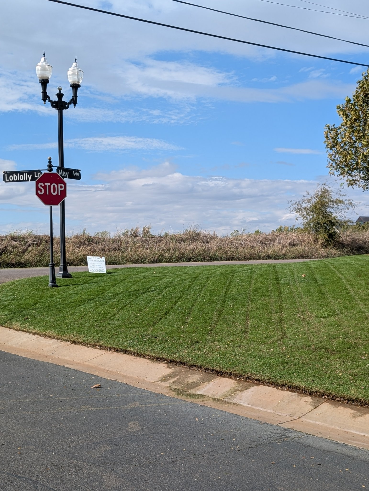
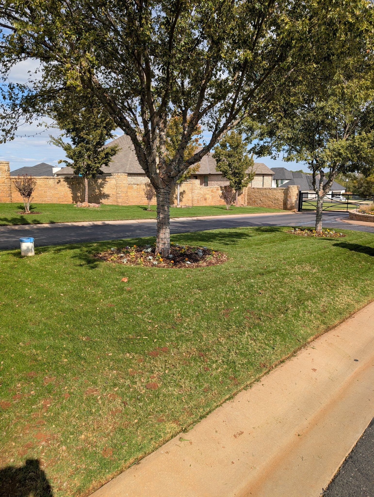
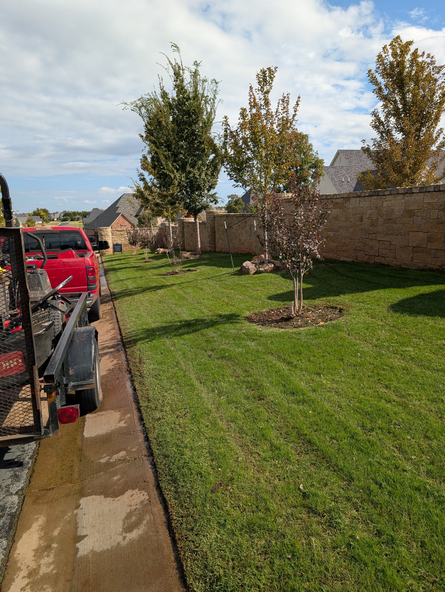
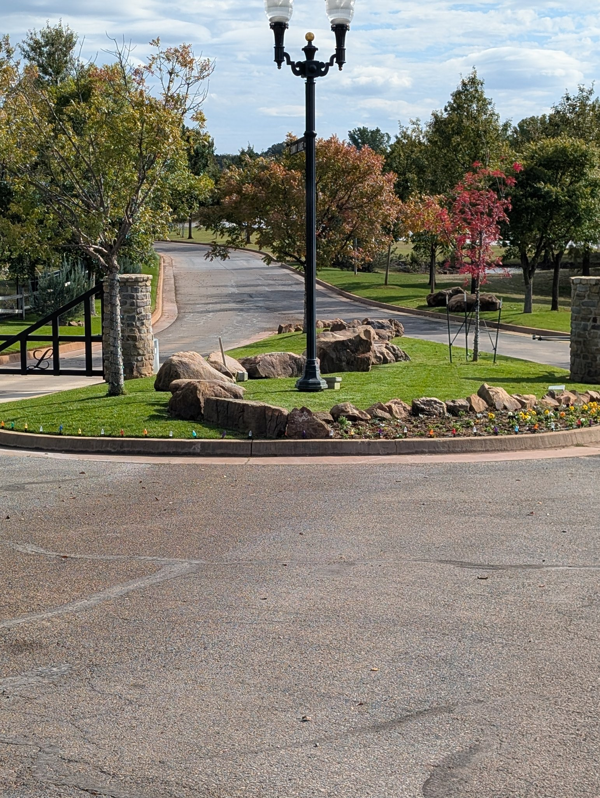
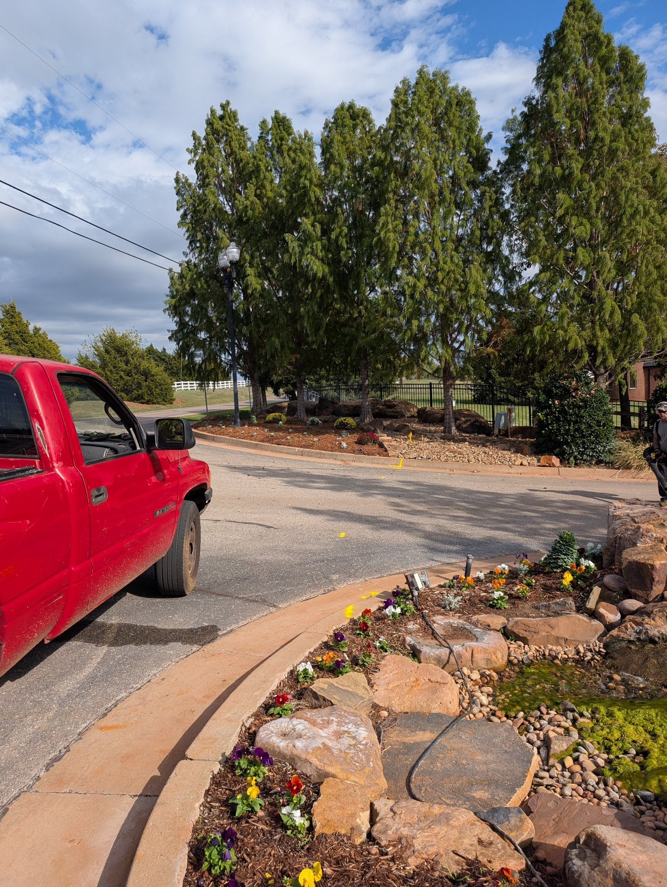
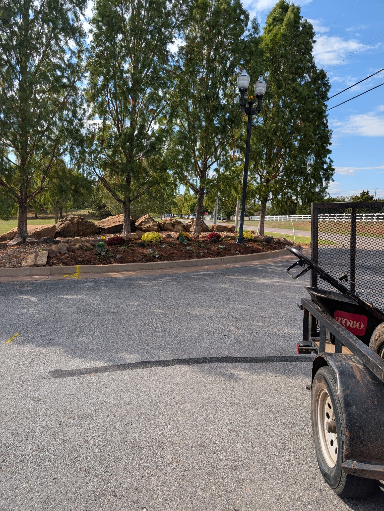

Growing Beauty LLC
Finished-work photos
← Back to Donovan's instructions
Finished Work — Summit Lakes Entrances 1 & 2, Edmond
Tuesday, Oct 27, 2026 · Crew: Justin + Jason · Entrance 1: 1:30 PM – 2:21 PM (0:51) · Entrance 2: 2:24 PM – 3:21 PM (0:57) · Total time on site 1:48:00 · Man-hours 3:36:00 (2 men)
Mow, edge, trim, blow + clean up all leaves & pine needles.







